Tempat Pengamatan
Tj. Anom, Kecamatan Pancur Batu, Kabupaten Deli Serdang, Sumatera Utara.
LAPORAN TUGAS LAPANGAN • AGROFORESTRI
Kecamatan Pancur Batu, Kabupaten Deli Serdang, Sumatera Utara.
Agroforestri adalah sistem penggunaan lahan yang mengintegrasikan tanaman kayu, tanaman pertanian, dan hewan dalam satu kesatuan pengelolaan.
Praktik ini bertujuan menciptakan pola penggunaan lahan yang berkelanjutan melalui interaksi antara faktor lingkungan, sosial, dan ekonomi. Penelitian ini berfokus pada identifikasi pola agroforestri yang dilakukan masyarakat Tj. Anom, Kecamatan Pancur Batu, Kabupaten Deli Serdang, Sumatera Utara.
Tj. Anom, Kecamatan Pancur Batu, Kabupaten Deli Serdang, Sumatera Utara.
Survei lapangan dan wawancara kepada pemilik lahan. Responden yang berpartisipasi adalah pemilik lahan.
Informasi mengenai tanaman pangan, tanaman berkayu, serta komponen peternakan yang ditemukan di lahan.
Berdasarkan hasil survei dan wawancara di Desa Tj. Anom, ditemukan beragam tanaman yang membentuk struktur vegetasi bertingkat.
Berdasarkan informasi dari pemilik lahan, komponen hewan yang ditemukan dalam sistem lahan antara lain:
Dokumentasi lapangan dari area pengamatan di Tj. Anom. Klik foto untuk melihat ukuran lebih besar.
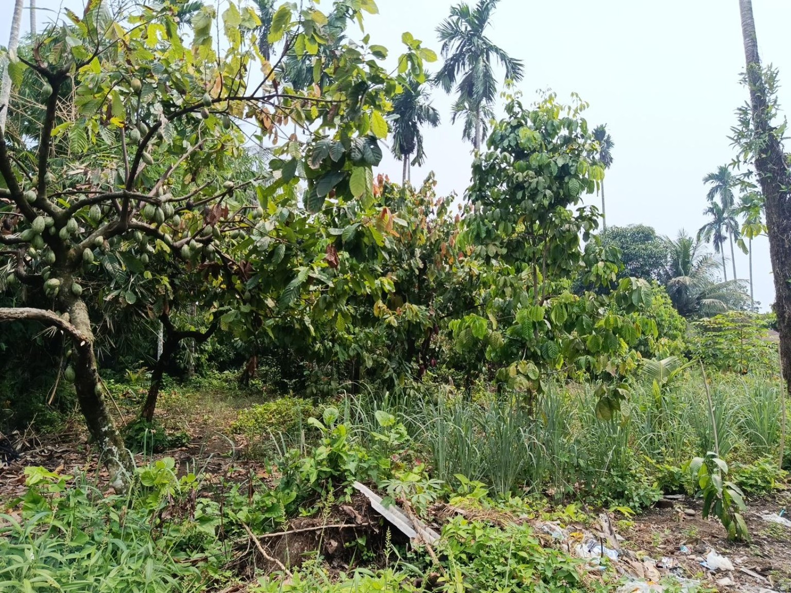
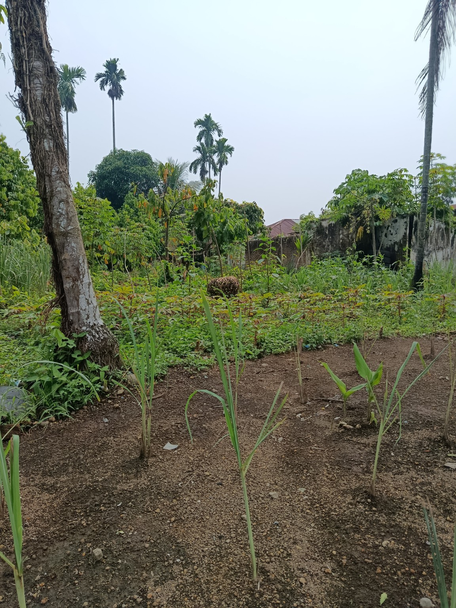
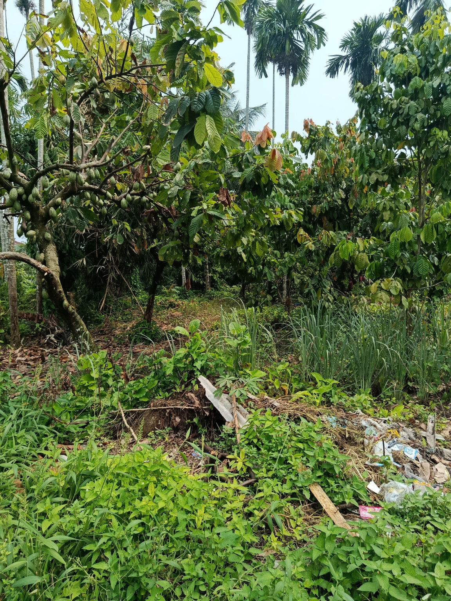
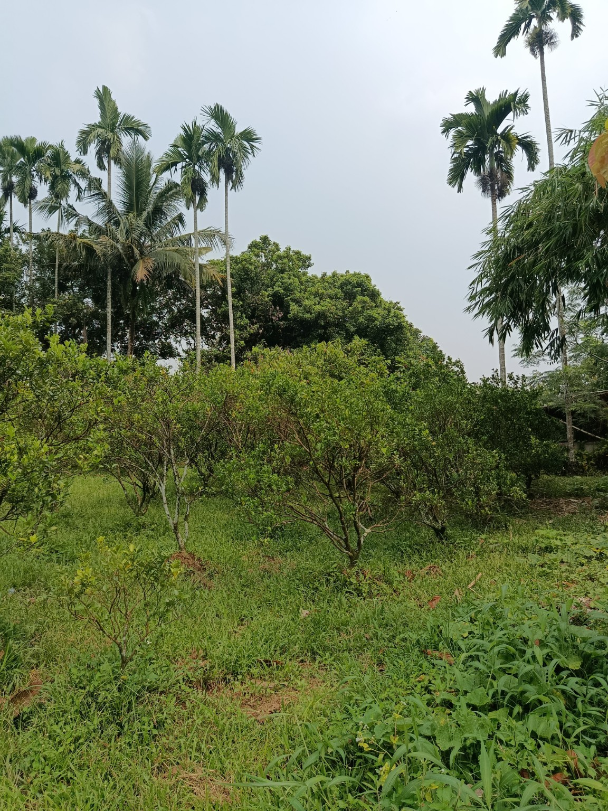
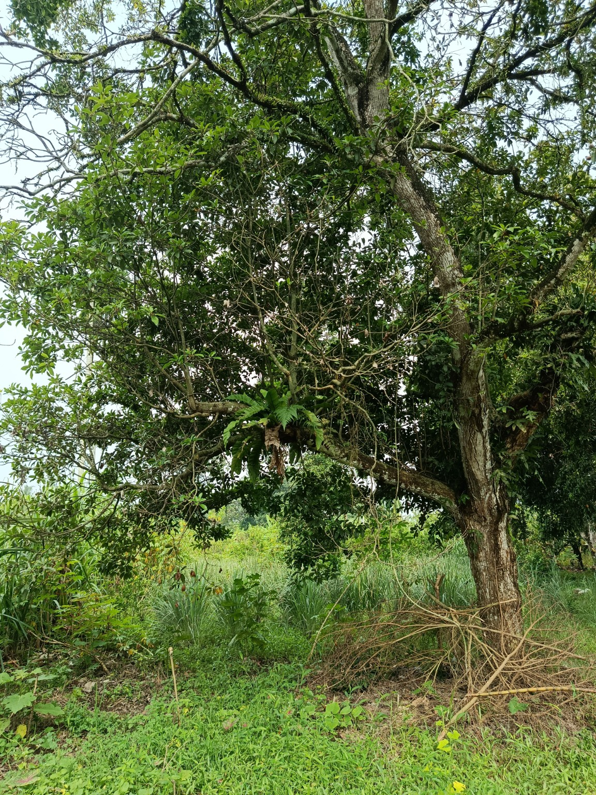
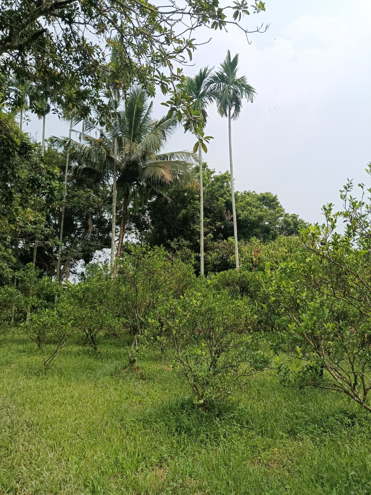
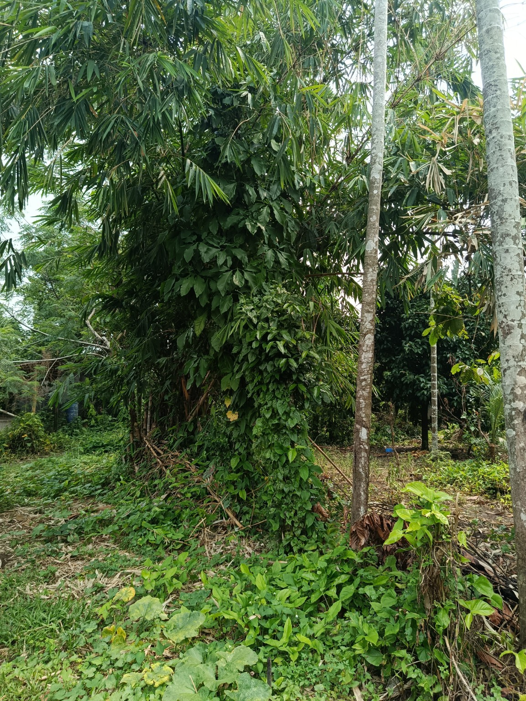
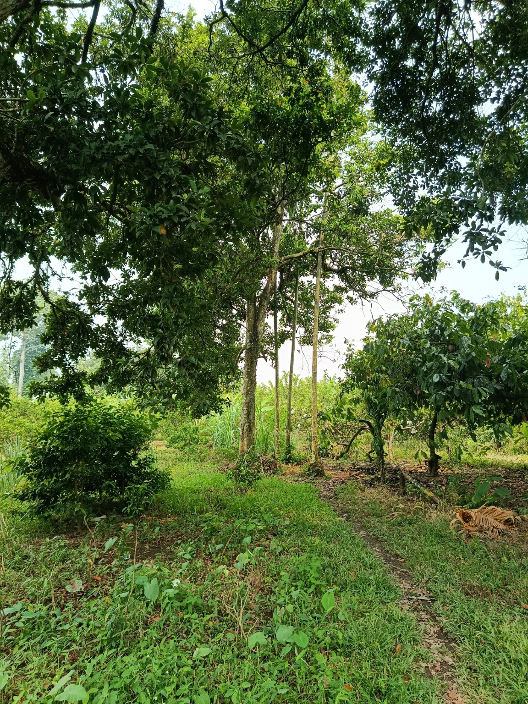
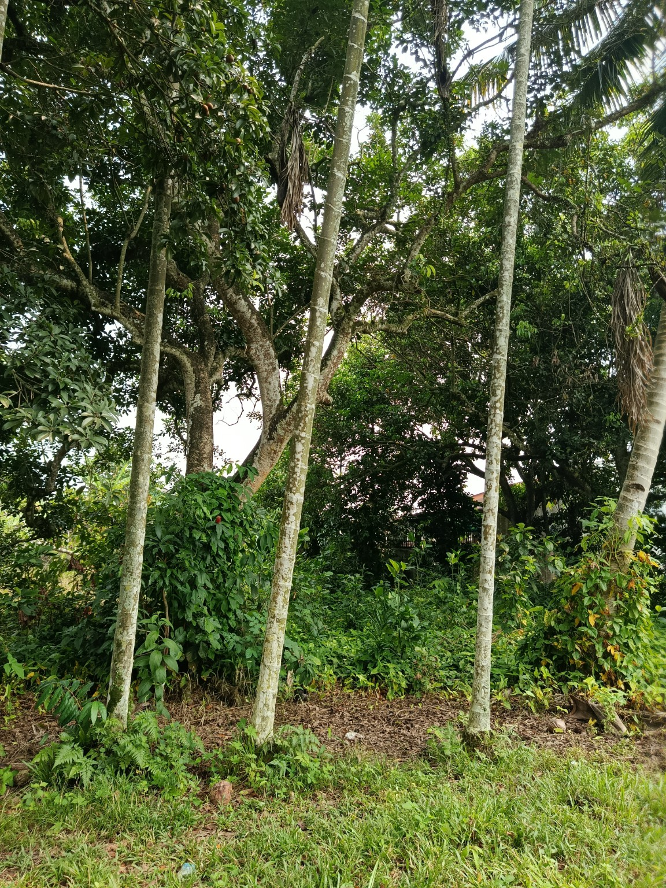
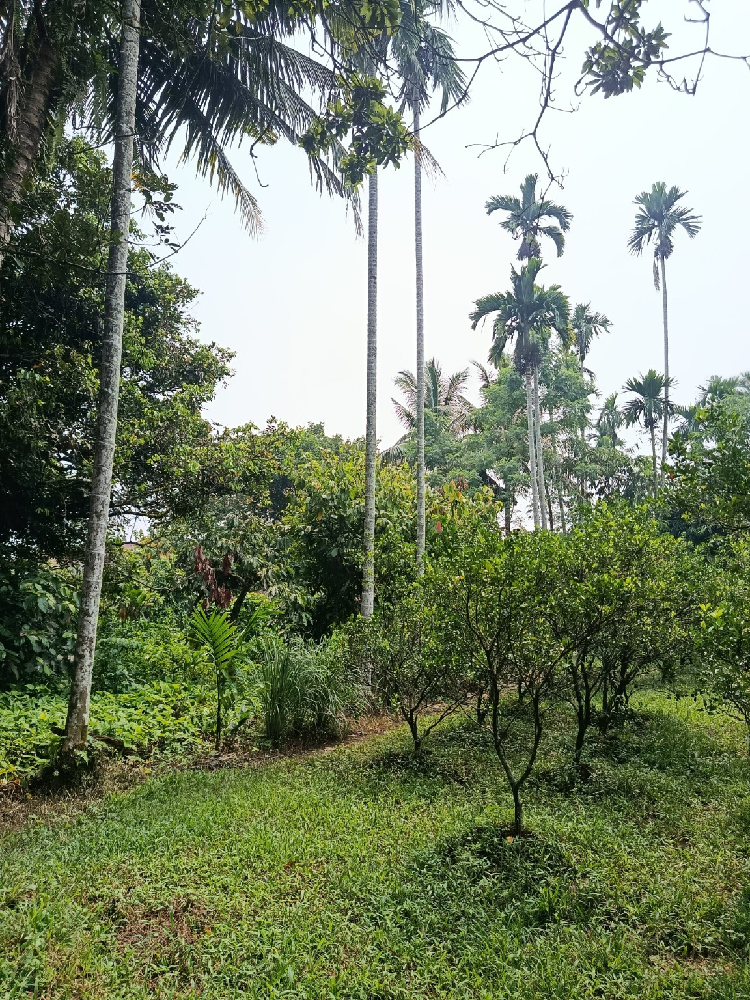
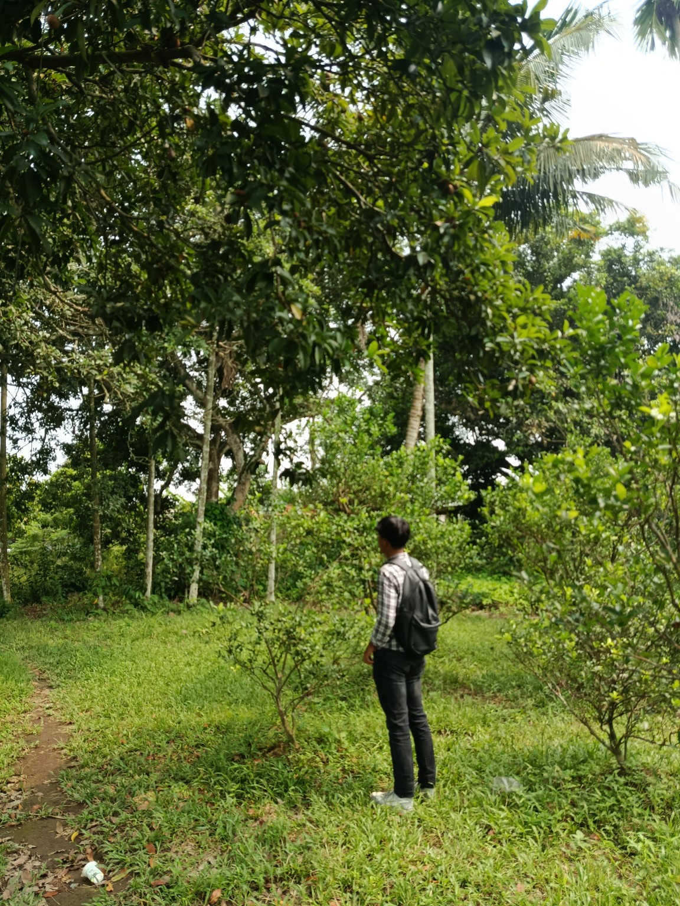
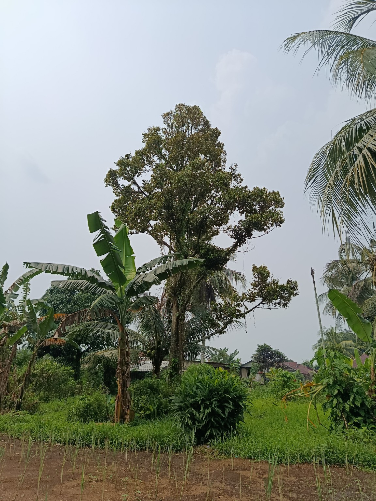
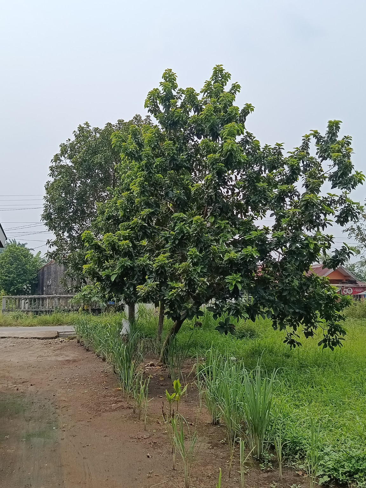
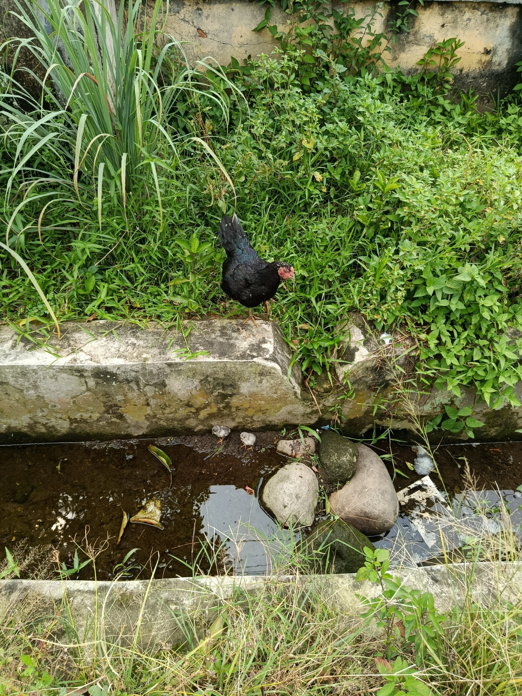
TJ. ANOM • PANCUR BATU
Lokasi pengamatan berada di kawasan Tj. Anom, Kecamatan Pancur Batu, Kabupaten Deli Serdang, Sumatera Utara.
Buka di Google Maps ↗ Titik peta diperbarui berdasarkan lokasi yang dibagikan: 3.527092, 98.571157.Nama: Galang Bima Setiawan Saragih
NIM: 2501120185
Dosen Pengampu: Ratna Sari, S.Hut., M.Sc
Program Studi: Manajemen Kehutanan
Mata Kuliah: Agroforestri
Universitas Satya Terra Bhinneka